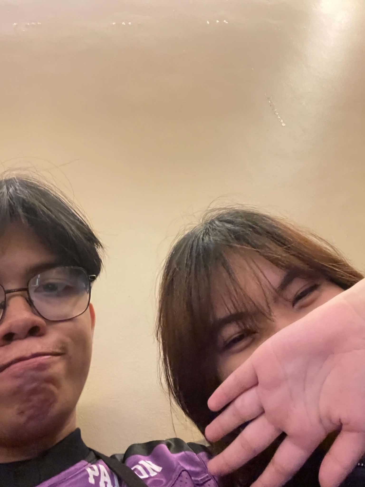
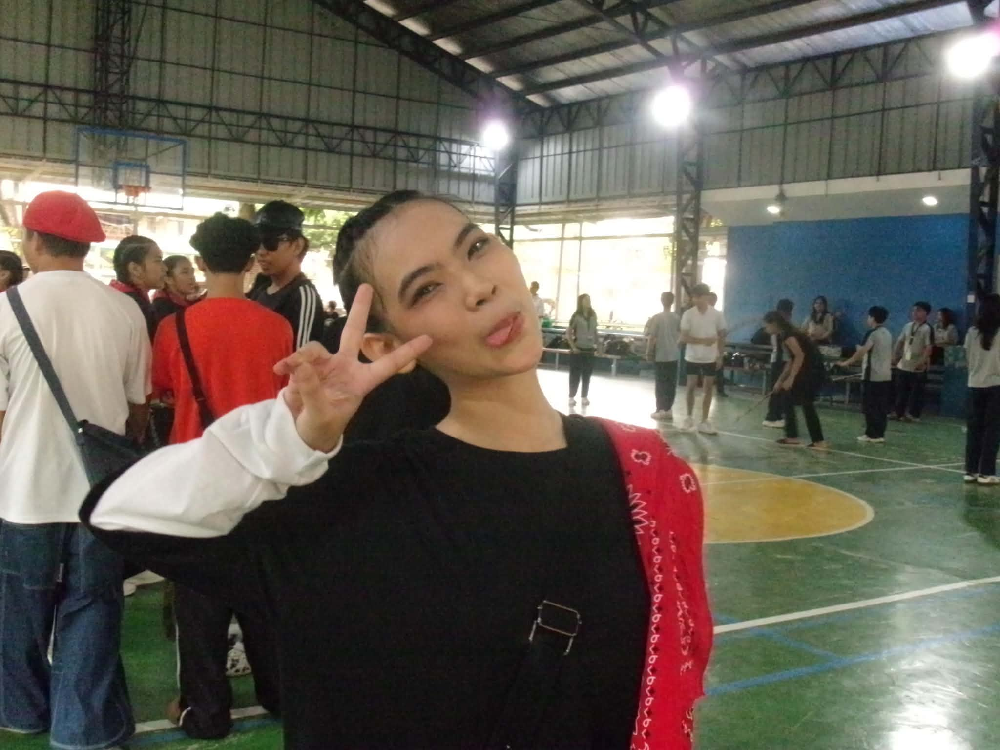
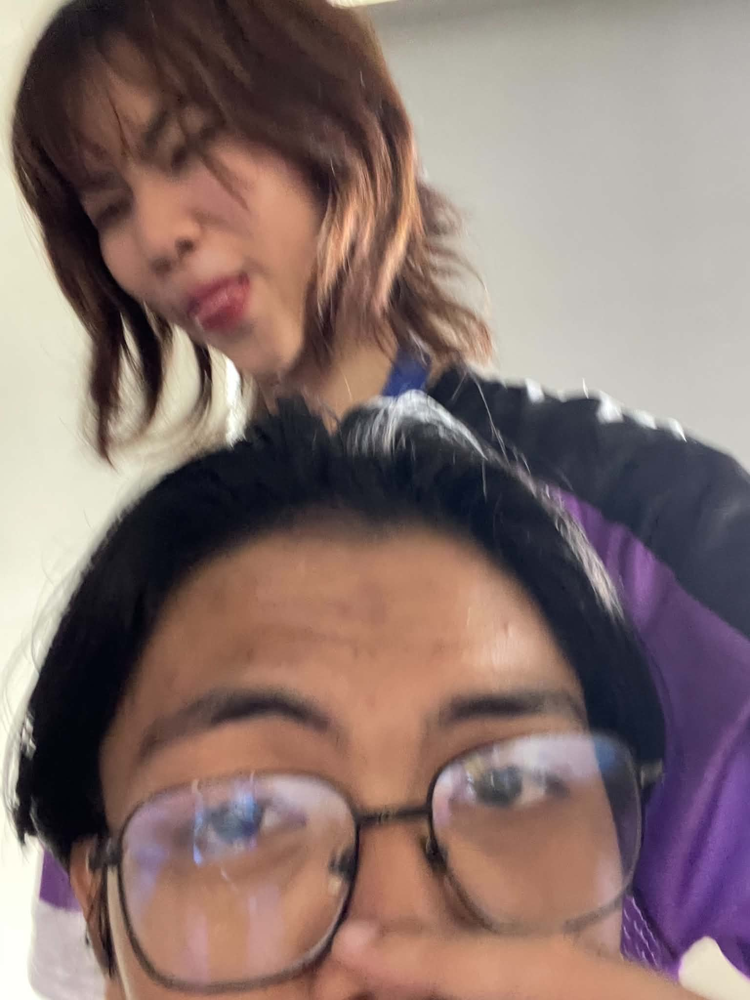

this opens when it's time ✦
until something special ✦
✦ para sa'yo ang laban na to ✦
Happy Birthday!
today you are
years of being absolutely everything
things i never said out loud
wala to nilagay ko lang



sorry uli and i love you sm
hi, you weren't probably expecting this pero kung oo, edi ok — well first of all, happy gurang day. wow 18 yern? HAHAHAHAHA. i just wanted to say na i hope you like this gift?? i shouldn't have disturbed your peace pero wala e, part of me still misses you kahit alam kong mali ko naman. to be honest, matagal ko na gusto sabihin yung message na yun, around late may pa ata. pero originally, i was planning to only make things up with you and not literally leave at all pero idk what's gotten into my mind when i finally decided on sending it to you na. my self sabotaging self literally changed the message to just end it because i realized na nasasaktan lang kita ng sobra. now if you're wondering why i always stay up late is because i've spent all those times trying to think about that very message, isesend ko ba? or di na? all those endless thoughts and i ended up just ending it. ang fucked up ko sobra lmao, i just left pero i keep on missing you. kinda wish i never did that pero i did. in a span of 30 seconds i let it all end, ganun lang kabilis nakakatangina. kaso wala na, there's nothing reverting it. it is what is, my decisions led to this. i'm really sorry kung eto pa yung bday gift na marereceive mo from me. i know you were expecting something better. happy birthday uli ^^)
as much as i want to come back and try again it probably wont matter to you anym. ang tanga ko. ily.
i intentionally made this openable the day after ur bday para atleast di ganto bubungad sayo and di mo ko iisipin sa mismong araw mo talaga. baka masira pa araw mo e
AND FOR THE LAST TIME HAPPY BIRTHDAY ULI SANA NAENJOY MO ARAW MO